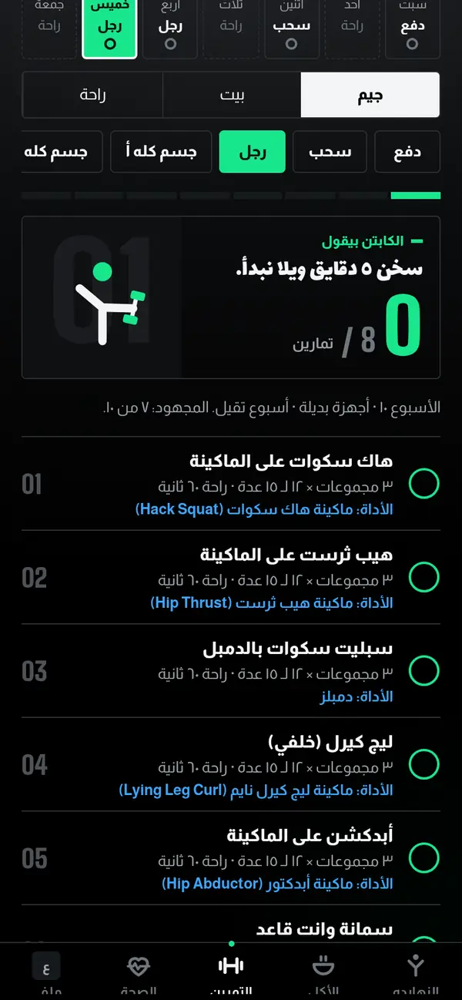
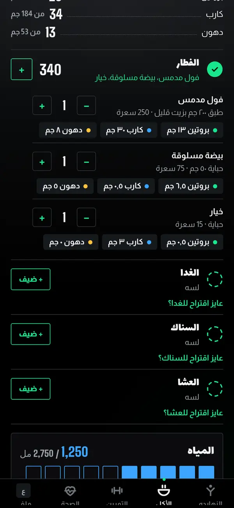
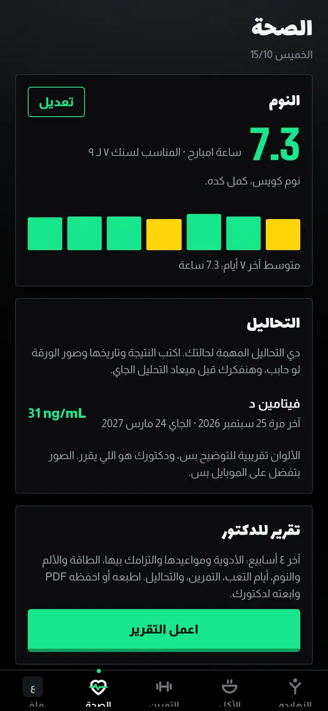

المميزات
التطبيق بيعمل إيه بالظبط؟
التطبيق بيبدأ من جسمك وهدفك وصحتك. أي حالة صحية أو دواء بيتسجل في الأول بيغير الأكل والتمرين والمواعيد، وعلشان كده مفيش خطتين شبه بعض.
التمرين
تمرين على قد أيامك، وبيتطور مع الوقت.
9 أنظمة بأسامي واضحة، من 3 لـ6 أيام في الأسبوع، وتقدم محسوب كل أسبوع.
الأنظمة
- الجسم كله، وعلوي وسفلي، ودفع وسحب ورجل، وأرداف ورجل، وعضلة كل يوم، و5 أيام بين الجيم والبيت
- لو مفيش نظام في دماغك: 3 أسئلة وبعدها اقتراح مناسب
- كل يوم يا جيم يا بيت يا راحة، وكل يوم جيم ليه تقسيمته: دفع أو سحب أو رجل وغيرها
التمارين
- 90 تمرين بالصور والشرح بالعربي
- نسخة بالجهاز واسمه، ونسخة بالأوزان الحرة
- أجهزة الجيم بتتحدد مرة واحدة، والتمارين بتيجي على قدها
- التمرين اللي مش مناسب لحالتك الصحية أو بيتعب مفصل بيتبدل بتمرين أنسب، مع ذكر السبب
- ينفع حذف تمرين أو إضافة تمرين جديد لليوم
في الجيم
- الوزن بيتكتب بالأرقام، والتكرارات بزرار زائد وناقص
- مؤقت للراحة شغال بالوقت الحقيقي
- برنامج 4 أسابيع بيتبدل بين تقيل وأخف، والوزن المقترح بيزيد لما كل التكرارات تكمل
- في الأيام المتعبة التمرين بيبقى حركة خفيفة وتنفس
سجل التمرين
- كل تمرين ليه كارت فيه أحسن وزن، والهدف الجاي، وفاضل قد إيه عليه
- عمود لكل جلسة بيوضح التقدم من أول نظرة
- خطة التمرين بتطلع ملف PDF ينفع يتبعت للمدرب

الأكل
أكل متنوع، ومحسوب بالوزن.
هدف السعرات والبروتين والكارب والدهون بيتحسب من العمر والطول والوزن والنشاط والهدف، وبيتعدل على حسب حالتك الصحية.
التسجيل
- 314 صنف، كل صنف بكميته وسعراته والبروتين والكارب والدهون
- الأرقام محسوبة بالجرام من قاعدة بيانات وزارة الزراعة الأمريكية (USDA FoodData Central)
- فطار وغدا وعشا وسناك، والوجبة بتدخل الحساب لما يتحط عليها علامة صح
- ينفع كتابة الوجبة بالكلام العادي، والتطبيق بيحسبها
- الأصناف اللي بتتكرر بتظهر الأول
لو الأكلة مش في القائمة
- بحث في قواعد بيانات الأكل العامة على الإنترنت، والنتيجة بتتحفظ في "أكلاتي"
- قراءة الباركود للمنتجات المغلفة في تطبيق الموبايل، والأرقام من ملصقها (Open Food Facts)
الوصفات
- أكتر من 150 وصفة للفطار والغدا والعشا والسناك
- أكلات من الشام والخليج والمغرب العربي والعراق واليمن ومصر، بنسخ أخف
- كمية الوصفة على قد السعرات الباقية في الوجبة، والمقادير بتتغير معاها
- الوصفات اللي مش مناسبة لحالتك الصحية مش بتظهر
الحساسية ونظامك الخاص
- سؤال عن حساسية الأكل في أول مرة، والوصفات اللي فيها الأكل ده مش بتظهر
- تنبيه أحمر لو الأكل ده اتسجل
- لو فيه نظام من دكتور أو أخصائي تغذية، أرقامه بتتسجل والتطبيق بيمشي عليها
تنبيهات واقتراحات
- علامة حمرا للأكل اللي فيه ملح كتير، أو بيعدي الدهون أو الكارب، أو مش مناسب لحالتك الصحية
- لو أكلة هتعدي السعرات، بيظهر لحد 3 بدايل أخف من نفس النوع
- لو وجبة زادت، الباقي بيتوزع على باقي اليوم
- الساعة 12 بالليل اليوم بيتقفل ويتحفظ للتقرير

تطبيقات التصوير بتخمن الكمية من الصورة. في اختبار لـ4 تطبيقات تصوير معروفة، الوجبة الواحدة طلعت أقل من الحقيقة بين 250 و345 سعرة (باحثين في NIH، مؤتمر NUTRITION 2026، والدراسة لسه مش منشورة في مجلة محكمة). الخبر
الصحة والأدوية
صحتك جزء من الخطة.
بناخد حالتك الصحية وأدويتك في الحسبان في التمرين والأكل. الحالة أو الدواء بيتكتب بالكلام العادي، والتطبيق بيتعرف عليه ويعدل الخطة، ولو مش عارفه بيسأل عنه 3 أسئلة.
الحالة الصحية
- الأكل بيتعدل: تنبيهات، وأكلات الأحسن تتجنب مع بعض الأدوية، وبروتين أقل وقت الحاجة
- التمرين بيتعدل: مجهود مناسب، وحركات أخف على المفصل التعبان، وكارت بالعلامات اللي لازم التمرين يقف عندها
- الإصابة اللي تحت العلاج بتبعد التمارين اللي بتضغط عليها لحد ما تخف
الأدوية والفيتامينات
- الجرعة والعدد والشكل: حباية، أو نقط، أو حقنة، وغيرها
- كل يوم، أو كل كام يوم، أو أيام محددة، أو كل أسبوع، أو كل شهر، وأكتر من ميعاد في اليوم
- تذكير في كل ميعاد، وعلامة لما الدواء يتاخد
- على معدة فاضية، أو مع الأكل، أو قبل النوم، والمواعيد متظبطة مع الوجبات
- تنبيه لو فيه دواءين لازم يتفصلوا عن بعض
النوم
- ميعاد النوم والصحيان، وعدد الساعات مقارنة بالمعدل المناسب لسنك
- عمود لكل ليلة في الأسبوع، والمتوسط
سؤال اليوم
- كل يوم بنسألك عن الطاقة والألم والنوم
- ولو فيه إرهاق أو نشاط للمرض، زرار في صفحة التمرين بيخلي تمرين اليوم خفيف
- لو اليوم صعب، التمرين بيتحول لوحده ليوم راحة خفيف
- الإجابات بتدخل في تقرير الدكتور
التحاليل
- النتيجة والتاريخ وميعاد التحليل الجاي
- صورة ورقة التحليل محفوظة في التطبيق
- تذكير قبل ميعاد التحليل الجاي
- الألوان دليل تقريبي بس، والدكتور هو اللي يقرر
السعرات ونظام الأكل
- كل أسبوع بنقارن تغير وزنك الحقيقي ونعدل هدف السعرات
- لو التقليل أكتر مش آمن، بنقترح الكلام مع الدكتور
- 4 أنظمة: متوازن، وبروتين أعلى، وكارب أقل، وكيتو، والكيتو بيتقفل لو مش آمن
- ومع أي حالة صحية، الأفضل نظام مكتوب من دكتور أو أخصائي تغذية، وأرقامه بتتسجل في التطبيق
تقرير الدكتور
- ملف PDF لآخر 4 أسابيع: الأدوية والالتزام بيها، والطاقة والألم والنوم، والأيام الصعبة، والتمرين، والتحاليل
- ينفع يتطبع أو يتبعت من الموبايل

يلا ويل بيساعد في المتابعة وبيفكرك بالمواعيد، بس مش بيشخص ومش بديل عن الدكتور. القرار في الدواء أو الأكل أو التمرين للدكتور.
التقدم والتنبيهات
تقدم باين، وتنبيهات فيها أرقامك.
صفحة التقدم
الوزن على رسم بياني، والمقاسات، ونسبة الدهون التقريبية، وصور التقدم. والصور بتفضل على موبايلك.
صورة الإنجاز
الكاميرا بتفتح جوه إطار فيه أرقام أسبوعك الحقيقية: الأيام المتتالية والتمارين وأيام الهدف. الصورة بتتاخد وتتشارك مع الأصحاب.
تنبيهات بأرقام اليوم
للوجبات والمية والتمرين والأدوية والتحاليل. التنبيه بيقول فاضل كام كوباية مية وكام سعرة، وتمرين اليوم، والكلام بيتغير كل يوم. ولو الحاجة اتعملت، التنبيه مش بيوصل. في تطبيق الموبايل بس.
النوم
ميعاد النوم والصحيان، وعدد الساعات مقارنة بالمعدل المناسب لسنك.
ظروفك الصحية
الإصابات والحمل والرضاعة وأيام الدورة، والخطة بتتعدل على حسب كل ظرف.
تقرير أسبوعي
كل يوم بالأخضر أو الأحمر، والأسابيع اللي فاتت موجودة، وينفع يتطبع أو يتبعت PDF.
نقاط وأيام متتالية
لما السعرات تفضل بين 75% و110% من الهدف، ومع كل تمرين يكمل.
العربي والإنجليزي
اللغة بتتغير في أي وقت، والكلام بالعربي بيخاطب الرجل والمرأة كل واحد بصيغته.
الكابتن
بطل الشعار، بيعلق على يومك بجملة على قده، وبياخدك في جولة في التطبيق أول مرة.
يلا نبدأ.
التطبيق جاي قريب على آيفون وأندرويد.